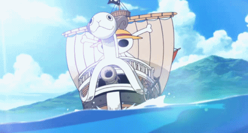

Bienvenue dans le JDR One Piece !

Si vous êtes ici c'est que l'univers vous a inspiré et que vous avez envie de vivre des aventure similaires :
Parcourir les mers, découvrir de nouvelle îles, de nouvelles civilisation, des trésors caché ou bien traqué les pirates, faire régner la justice...
Bien sûr, tout cela se fera dans le fun et la bonne humeur.
Dans un JDR, vous incarnez le héros que vous voudriez être, alors laissez libre court à votre imagination et monter a bord de votre navire, le MJ vous y attend pour commencer une nouvelle aventure

Nous allons d'abord commencer par crée votre camp qui permettra de définir la suite de l'histoire
cliquez juste ici pour accéder à l' affiliation